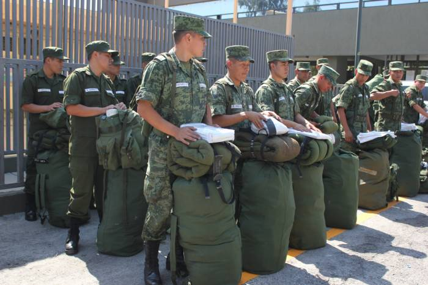
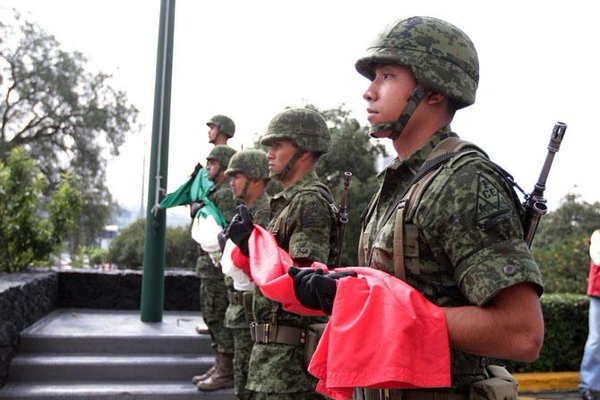
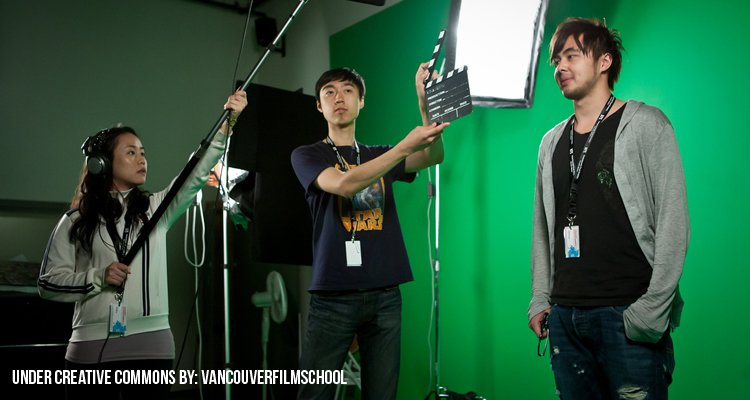
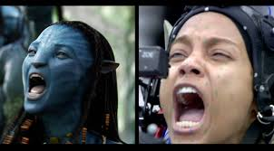
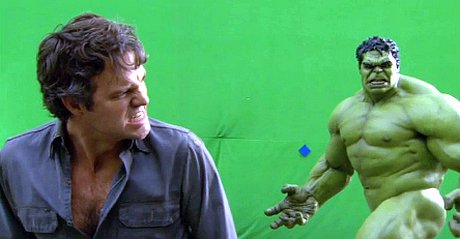
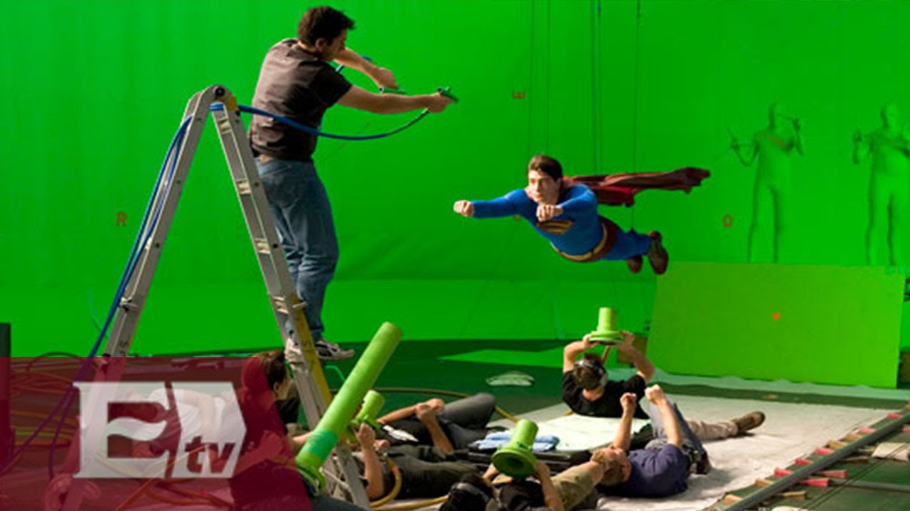
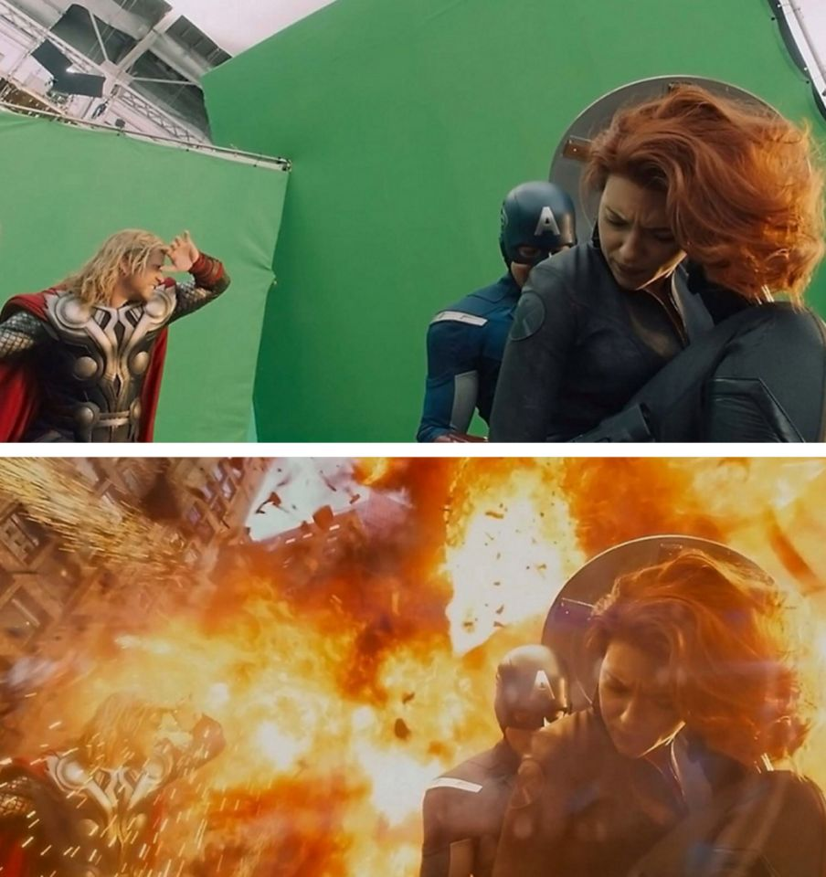
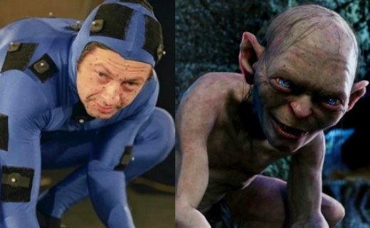

Piloto Aviador
Un piloto de aviación o piloto aviador es la persona cuya función es guiar aeronaves en vuelo. El término original era el de aviador, especialmente en Francia, de donde surgió el término avión. ...
Ingresar al sistema educativo militar es, sin duda, una decisión muy importante que requiere de una larga conversación con tus padres. Tú y tu familia estarán muy orgullosos de este logro tan significativo al ser un profesionista egresado de una Escuela Militar.
Debes tener en cuenta que la educación militar es un proceso de transformación física, mental y cultural de hombres y mujeres para lograr que voluntariamente, convencidos y comprometidos entreguen al país y a sus instituciones su lealtad, capacidades, habilidades, inteligencia y la misma vida si fuese necesario, en el cumplimiento de los deberes que impone el servicio de las armas.
El Ejército mexicano requiere de hombres y mujeres con deseos de servir a la patria y comprometerse con el pueblo de México, para defender la soberanía nacional, garantizar la seguridad interior y brindar apoyo a la población civil cuando se requiera.
La carrera Cinematografía está relacionada con otras carreras como Cine y Televisión, Artes Audiovisuales, Realización Cinematográfica, Dirección Cinematográfica, Dirección de Cine y Televisión, Realización de Cine y Televisión, etc. Dependiendo qué rama de la cinematografía te interese puedes escoger entre una carrera u otra.
En la Licenciatura en Cinematografía y todas las carreras relacionadas con esta disciplina se estudia todo acerca de la creación de imágenes en movimiento. Por ende, esta carrera incluye materias como la expresión documental, narrativa y escénica, el lenguaje cinematográfico, Dirección, Sonido, Edición, Postproducción, Guión, Realización, Montaje, etc.
Las tareas de un cinematógrafo dependerán del orden jerárquico donde se encuentre, ya que en el mundo de la cinematografía existen diferentes profesionales involucrados: el más importante de todos es el Director de fotografía o cinematógrafo, después se encuentra el camarógrafo o el operador de cámara, quien sigue en orden descendiente en la jerarquía es el iluminador o el primer asistente de cámara y, por último el claquetista o el segundo asistente de cámara.
El cinematógrafo es quien se encarga de todas las cuestiones técnicas acerca de la imagen y trabaja junto con el director de cine. Los directores de fotografía suelen tener a cargo a los camarógrafos, iluminadores y claquetistas. Los camarógrafos, por su parte, operan la cámara y componen el plano. Los ayudantes de cámara o foquistas son los que organizan, revisan y aseguran el correcto funcionamiento de la cámara y los que distribuyen la profundidad de campo en un plano. Por último, el segundo asistente de cámara o claquetista es quien se encarga de colocar la claqueta delante de la cámara cuando se comience a grabar.
Esta experiencia es de suma importancia, ya que para poder ingresar al mercado de trabajo en este ramo, siempre se le pide al candidato cierto número de horas de experiencia.
Todos los estudiantes que terminen esta carrera recibirán, además de su título, un certificado que demuestre la experiencia de haber sido parte del equipo de animación de una película.
A lo largo de esta carrera, los maestros de Westbridge Film School, fomentan el compromiso, el trabajo en equipo, y supervisan de cerca a cada uno de nuestros alumnos.
Durante sus estudios, los alumnos de esta licenciatura obtendrán tanto conocimiento como experiencia en el uso de distintos programas y equipo indispensables para destacar como profesionista en el medio, tales como programas de diseño, animación 3D, edición de video, videocámaras, sistemas de iluminación para cine y hardware específico para el mundo del 3D.
Este plan de estudios es único en su género, ya que dada su naturaleza práctica, facilita el camino a nuestros estudiantes para ingresar tanto a estudios de cine y TV, así como de animación, y al medio publicitario.
El sistema educativo que se sigue en nuestra universidad es denominado como Conocimiento Aplicado ®, y consiste en que la teoría adquirida en aulas es inmediatamente aplicada en proyectos reales. Lo anterior garantiza que el conocimiento sea efectivamente utilizado, incrementando la retención del mismo.
PRIMER AÑO: ANIMACIÓN 2D Y FUNDAMENTOS 3D
Durante éste año, te iniciarás en el arte de la animación usando técnicas tradicionales de dibujo y storyboarding. También te empaparás de las técnicas de cine que diferencian a un animador experto de uno aficionado, comenzarás a aprender distintas herramientas de modelado y animación 3D, y aprenderás las técnicas de edición de cine.
Dibujo 101. Fundamentos de Animación. Animación 2D Historia del Arte Análisis de historias. Modelado en 3D: Objetos y personajes. Actuación para animación. Historia del Cine. Storyboarding . Cinematografía Etica en los negocios. Edición digital de video. Dibujo de la figura humana. Edición digital de imágenes. Iluminación y texturizado para entornos 3D. Rigging y Weighting para 3D.
SEGUNDO AÑO: ANIMACIÓN 3D AVANZADA A lo largo del segundo año, terminarás de aprender las herramientas de animación, aplicando todos los conocimientos anteriores. Aprenderás a integrar efectos de audio y música al timeline de una película animada, desarrollarás animatics, y aprenderás a hacer críticas constructivas tanto cine tradicional, como cine animado. Aprenderás como desarrollar una historia interesante para cine, y dominarás la técnica para desarrollar guiones. También aprenderás como se lleva a cabo una campaña publicitaria para medios visuales y sabrás cómo puedes llevarla a su nivel máximo con tus conocimientos.
Animación 3D. Animación de Personajes Partículas y efectos dinámicos. Rendering, variantes y herramientas. Animación en Flash Pintura Audio y efectos de sonido. Dirección Artística Mercadotecnia para los medios visuales. Desarrollo creativo de historias. Guión cinematográfico. Planeación y desarrollo de tu cortometraje animado.
TERCER AÑO: EFECTOS VISUALES Una vez que has dominado todas las técnicas de animación 3D, estarás listo para aplicarlas al desarrollo de efectos visuales. Comenzarás por aprender como se hacen los efectos tradicionales usando trucos ópticos, de luces y de cámaras. Al mismo tiempo, aprenderás a usar software y equipo para integrar video de alta definición con efectos generados por computadora.
Durante éste año, tendrás tus prácticas profesionales, y podrás concursar por la oportunidad de participar de forma activa en el desarrollo de la película, o bien, llevar a cabo tus prácticas en estudios prestigiados de animación, siendo parte del desarrollo y/o animación de personajes, objetos y sets, lo que te dará un conocimiento profundo de la animación, al aprender a resolver los problemas técnicos reales que se presentan en un ambiente profesional de animación.
Finalmente, tendrás la oportunidad de elegir una de las empresas que participan en nuestro programa de escuela-industria, planearás con ellos un proyecto de efectos visuales, y comenzarás a desarrollarlo, lo que te dará una enorme oportunidad para promocionar tus habilidades en el medio laboral.
Manejo de equipo de cine digital de alta definición. Efectos especiales tradicionales. Matte Painting y Digital Matte Painting Ilustración Digital Preproducción Camera tracking en 2D usando After Effects. Camera tracking en 3D usando Maya. Compositing y Rotoscoping.Extracción de keys mediante chroma, luma, etc (green screen). Motion Capture. Desarrollo de un proyecto de efectos visuales.
Westbridge Film School presenta su licenciatura en Animación y efectos visuales en la cuál nuestros estudiantes, además de adquirir los conocimientos de cine y animación, tendrán la oportunidad de vivir una experiencia única, participando activamente en la creación de una película animada.
ver mas informacion click aqui